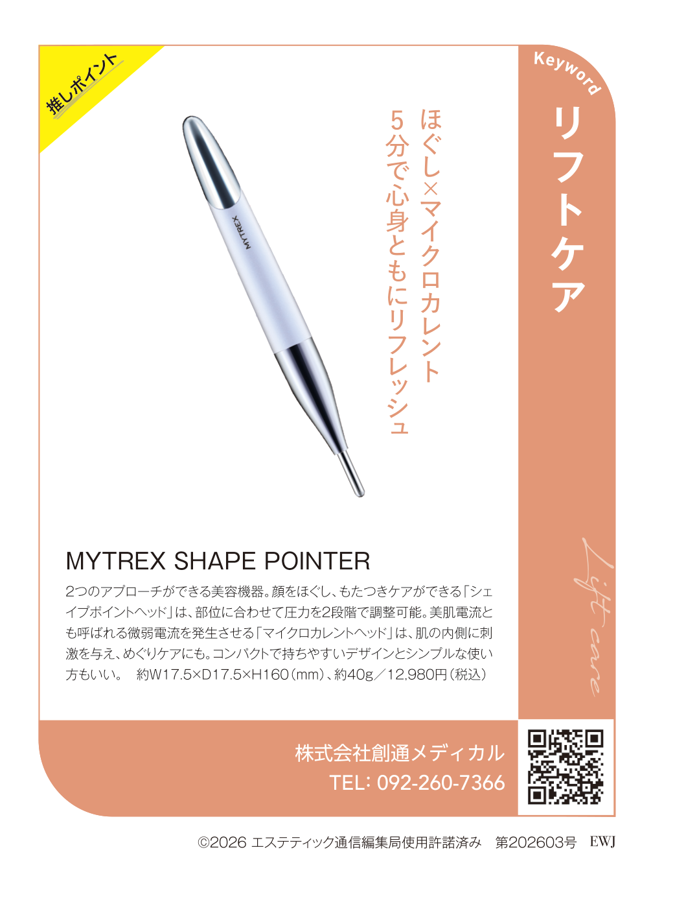
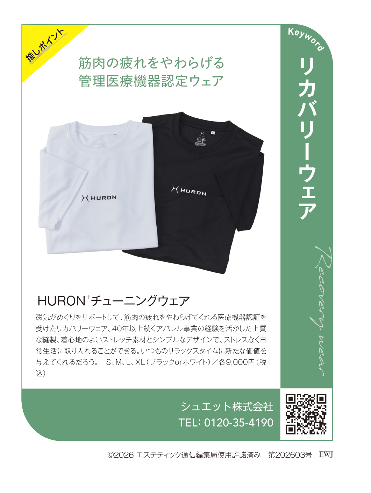
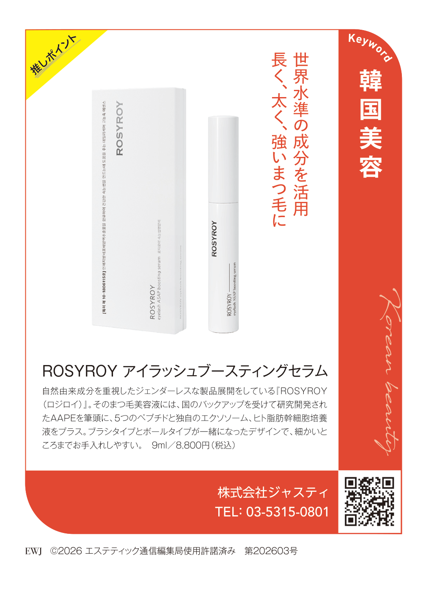

MYTREX SHAPE POINTER
株式会社創通メディカル ／ Keyword「リフトケア」

掲載概要
- 企画
- マストバイアイテム2026
- キーワード
- リフトケア
- カテゴリ
- 美容機器（ペン型）
- 価格
- 12,980円（税込）
- 誌面コピー
- ほぐし×マイクロカレント 5分で心身ともにリフレッシュ
ほぐしケアの「シェイプポイントヘッド」と、微弱電流の「マイクロカレントヘッド」の2つのアプローチができる美容機器。約40gのコンパクトな設計で、シンプルに使える点が特長。
実施意図
新商品であり、量販店の売場では比較的高価格帯となるため、「実績」と「視覚的に伝わるプロモーションツール」を求めて実施。
D2C・通販企業としての展開
- ✓WEB・自社サイト
- ✓LP
- ✓販促POP
- ✓量販店
- ✓デモ時のトークスクリプト
掲載の価値を、数字から読み解く
決裁権者が9割を占める読者から「リフトケア」の注目機器として紹介された、という位置づけがつきます。
12,980円は検討に慎重さが出やすい価格帯。専門誌の推薦という第三者の視点が、購入の背中を押す安心材料になります。
「5分」「2つのアプローチ」という手軽さは、LPやPOPの短い言葉でも伝わりやすく、誌面との一貫性も保てます。
展開シーン別の活かし方
エンブレムと誌面画像をファーストビュー付近に置き、「サロン専門誌が選んだ」という根拠を最初に示す。
手に取る前の数秒で伝わるよう、エンブレム＋「リフトケア」のキーワードを前面に。
美容機器の売場で、専門家の選定という違いを一目で示す役割。
メーカー担当者の声
- 量販店では販促POPにエンブレムを使用。新商品でありながら「実績のある商品」として展開できた。
- デモの際のトークスクリプトにも掲載実績を組み込めたことが、販売につながった要因ではないかとのお声をいただいています。
- 掲載をきっかけにサロン導入も増え、エステでの取り扱いにもつながったとのことです。
※ヒアリング内容の要約。HURONとROSYROYは同メーカーとしていただいたお声です。
HURON+ チューニングウェア
シュエット株式会社 ／ Keyword「リカバリーウェア」

掲載概要
- 企画
- マストバイアイテム2026
- キーワード
- リカバリーウェア
- カテゴリ
- リカバリーウェア
- 価格
- 各9,000円（税込）
- 誌面コピー
- 筋肉の疲れをやわらげる管理医療機器認定ウェア
磁気のめぐりサポートで筋肉の疲れをやわらげる、医療機器認証取得のリカバリーウェア。40年以上のアパレル事業の経験を活かした上質な縫製とストレッチ素材が特長。
実施意図
毎年マストバイに参加し、これまで10製品で実施。「今、買うべき」というトレンド感を付けたいアイテムで活用。
D2C・通販企業としての展開
- ✓WEB・自社サイト
- ✓LP
- ✓販促POP
- ✓量販店
- ✓EC
- ✓ライブコマース
- ✓ポップアップイベント
掲載の価値を、数字から読み解く
「医療機器認証」という製品の根拠に、「専門誌の選定」という第三者評価が加わり、信頼の裏付けが二重になります。
9,000円は日常に取り入れやすい価格。サロンの店販だけでなく、一般の購入者にも説明しやすい根拠になります。
広告信頼度93%の媒体に掲載されたという事実が、ブランドの安心感に結びつきます。
展開シーン別の活かし方
「管理医療機器認定」と「専門誌選定」を並べ、性能面と第三者評価の両方を一画面で伝える。
ウェアは着用感が見えにくいため、エンブレムで「選ばれた理由」を補う。
多くの商品が並ぶ売場で、専門誌の選定という差別化の一言として機能。
メーカー担当者の声
- ライブコマース、ECサイト、量販店、ポップアップイベントでの実績として活用。
- 「美容のプロが選んだ」ことを示せる点に加え、業界誌の企画のため大手メーカーの製品が使っていないエンブレム自体が、差別化にもなっていると感じているとのことです。
- 掲載後はイベントなどでも使用し、この企画だけの結果ではないものの、売上はこの1年、毎月伸び続けているとのお声をいただいています。
※ヒアリング内容の要約。HURONとROSYROYは同メーカーとしていただいたお声です。
ROSYROY アイラッシュブースティングセラム
株式会社ジャスティ ／ Keyword「韓国美容」

掲載概要
- 企画
- マストバイアイテム2026
- キーワード
- 韓国美容
- カテゴリ
- まつ毛美容液
- 価格
- 9ml／8,800円（税込）
- 誌面コピー
- 世界水準の成分を活用 長く、太く、強いまつ毛に
AAPEを筆頭に、5つのペプチドと独自のエクソソーム、ヒト脂肪幹細胞培養液を配合。ブラシ・ボールの両タイプ一体のデザインで細部までケアしやすい。
実施意図
毎年マストバイに参加し、これまで10製品で実施。「今、買うべき」というトレンド感を付けたいアイテムで活用。
D2C・通販企業としての展開
- ✓WEB・自社サイト
- ✓LP
- ✓販促POP
- ✓量販店
- ✓EC
- ✓ライブコマース
- ✓ポップアップイベント
掲載の価値を、数字から読み解く
2027年の投票でもペプチドやエクソソームが上位に並ぶなど、成分への関心は高く、製品の方向性と重なります。
「韓国美容」のキーワードで紹介されることで、成分や話題性を求める読者にも届きやすくなります。
似た製品が多い中、専門誌の選定は「どれを選べばよいか」の判断材料になります。
展開シーン別の活かし方
成分の説明にエンブレムを添え、専門的な内容に説得力を持たせる。
成分名が並ぶ訴求に、「選ばれた」という分かりやすい一言を加える。
価格の近い競合の中で、第三者の選定という判断材料を店頭で示す。
メーカー担当者の声
- ライブコマース、ECサイト、量販店、ポップアップイベントでの実績として活用。
- 「美容のプロが選んだ」ことを示せる点に加え、業界誌の企画のため大手メーカーの製品が使っていないエンブレム自体が、差別化にもなっていると感じているとのことです。
- 掲載後はイベントなどでも使用し、この企画だけの結果ではないものの、売上はこの1年、毎月伸び続けているとのお声をいただいています。
※ヒアリング内容の要約。HURONとROSYROYは同メーカーとしていただいたお声です。